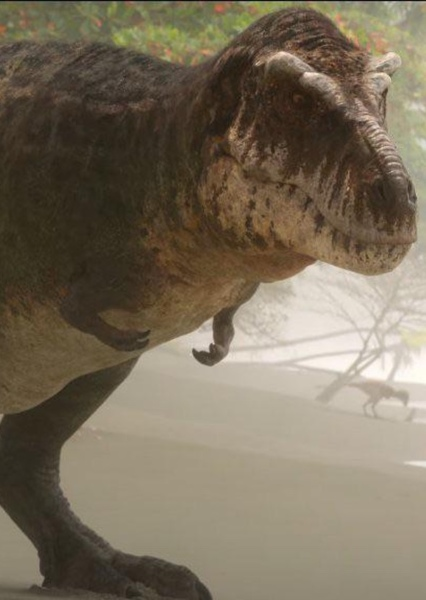
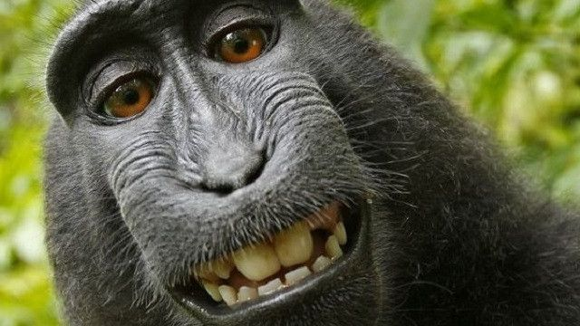
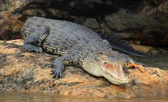
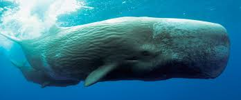

Animais Fantasticos
E onde habitam
espectro patrono
CREEPER OW MAN
Tiranossauro Rex
O Tiranossauro Rex, frequentemente abreviado como T. rex, foi um dos maiores e mais famosos dinossauros carnívoros que já existiram. Viveu há cerca de 68 a 66 milhões de anos, durante o período Cretáceo, na região que hoje corresponde à América do Norte.
Com aproximadamente 12 metros de comprimento, cerca de 4 metros de altura nos quadris e pesando até 9 toneladas, o T. rex era um predador imponente. Sua cabeça era enorme, equipada com mandíbulas poderosas e dentes afiados que podiam ultrapassar 15 centímetros de comprimento, capazes de esmagar ossos com facilidade.
Apesar de seus braços serem curtos, com apenas dois dedos, eles eram musculosos e provavelmente tinham alguma função específica, embora limitada. Suas pernas, por outro lado, eram fortes e adaptadas para correr em curtas distâncias, o que o tornava eficaz na caça ou no confronto com outros animais.
O T. rex possuía visão binocular, o que lhe dava uma excelente percepção de profundidade, e acredita-se que tinha um olfato muito aguçado, ajudando-o a localizar presas ou carcaças a grandes distâncias.
Embora seja tradicionalmente retratado como um caçador feroz, alimentando-se de animais mortos.

Macaco
Macacos são primatas mamíferos caracterizados por cérebros desenvolvidos, polegares opositores e olhos frontais, que podem viver em diversos ambientes e têm uma dieta onívora. Eles desempenham um papel ecológico importante na dispersão de sementes para a manutenção das florestas. O termo "macaco" pode ser usado de forma mais restrita no Brasil para se referir aos símios do Novo Mundo, ão conhecidos por serem inteligentes e sociáveis, saltando entre árvores, embora algumas espécies vivam no solo. Sua dieta é variada, incluindo frutas, folhas, sementes e pequenos animais.

Crocodilo de água salgada
O crocodilo-de-água-salgada é o maior réptil do mundo, conhecido por seu tamanho impressionante, com machos que podem atingir mais de 7 metros e pesar cerca de 1.000 kg. Possui mandíbulas extremamente poderosas, uma mordida mais forte que a de qualquer outro animal, e é um predador de topo oportunista que caça uma grande variedade de presas. Além disso, ele se distingue dos jacarés pelo focinho pontudo e pelo fato de todos os seus dentes serem visíveis quando a boca está fechada.

Baleia Cachalote
A baleia-cachalote (Physeter\ macrocephalus) é o maior cetáceo com dentes e um dos maiores carnívoros do mundo, conhecida por sua cabeça gigante e capacidade de mergulhos em grandes profundidades. Ela habita todos os oceanos, exceto o Ártico, e se alimenta principalmente de lulas-gigantes, com corpo cinza-escuro, possui um único espiráculo (orifício respiratório) assimétrico na parte superior esquerda da cabeça, o que causa um jato de ar projetado para a frente e para a esquerda.

Orca
A orca é o maior membro da família dos golfinhos, um superpredador marinho com coloração preta e branca característica e extremamente inteligente. Também conhecida como "baleia assassina", ela tem o nome por sua capacidade de caçar e matar outros grandes animais, incluindo baleias, utilizando táticas de caça coordenadas em grupo. Vive em todos os oceanos do mundo e possui uma organização social complexa com comportamentos e dialetos únicos em cada grupo